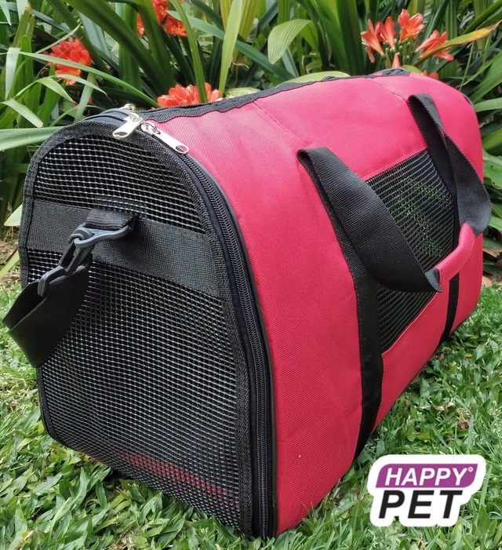
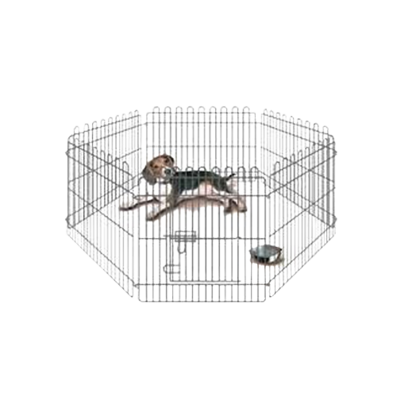
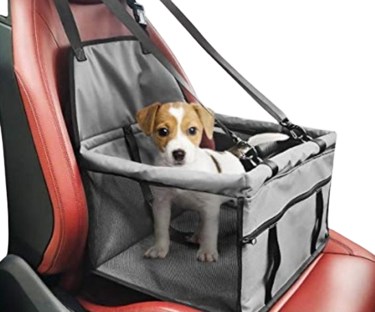
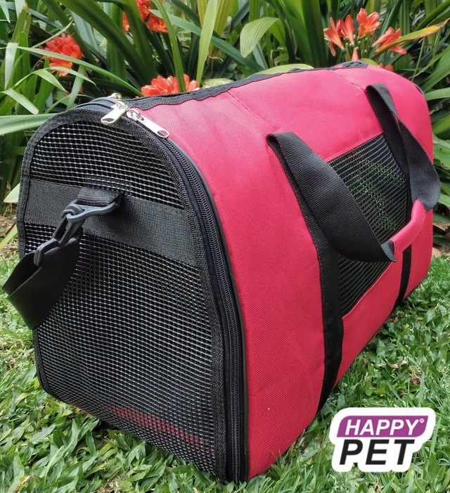
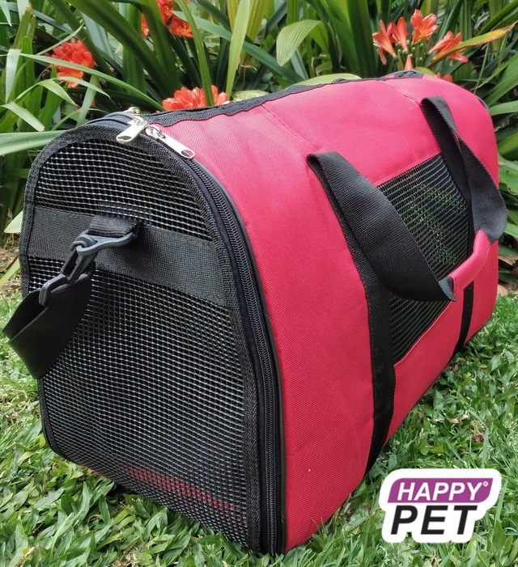

BIENVENIDO A NUESTRA TIENDA DE PRODUCTOS PARA MASCOTAS
BOLSO TRANSPORTADOR LISO MB

Este bolso transportador de mascotas está realizado con materiales resistentes y fáciles de limpiar.
Posee una red plástica en los extremos que permite una correcta circulación del aire y luz, además de permitir al animal ver hacia el exterior del bolso.
El animal se puede ingresar o retirar desde la parte superior o desde una puerta frontal.
Medidas:
Largo: 50 cms
Ancho: 25 cms
Alto: 38 cms
Corral Hexagonal

Corral metálico desarmable de metal.
Corral diseñado en metal de acero, desarmable con el tamaño de 60x60 cada seccion, almodable al espacio a cubrir.
Bolso Portacan

Habitaculo de facil sujecion a asientos de vehiculos para transporte con mascotas, incluye mosqueton para mascota.
Este bolso transportador de mascotas está realizado con materiales resistentes y fáciles de limpiar.
Posee una red plástica en los extremos que permite una correcta circulación del aire y luz, además de permitir al animal ver hacia el exterior del bolso.
El animal se puede ingresar o retirar desde la parte superior o desde una puerta frontal.
 
